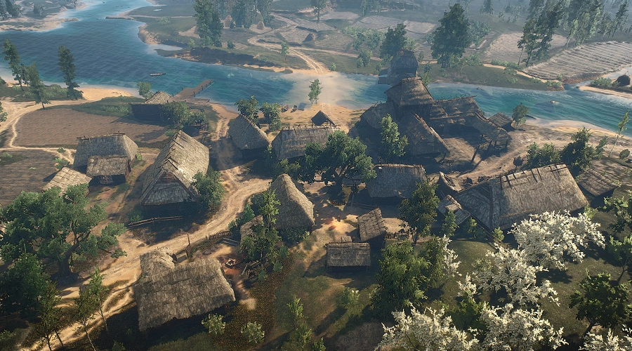
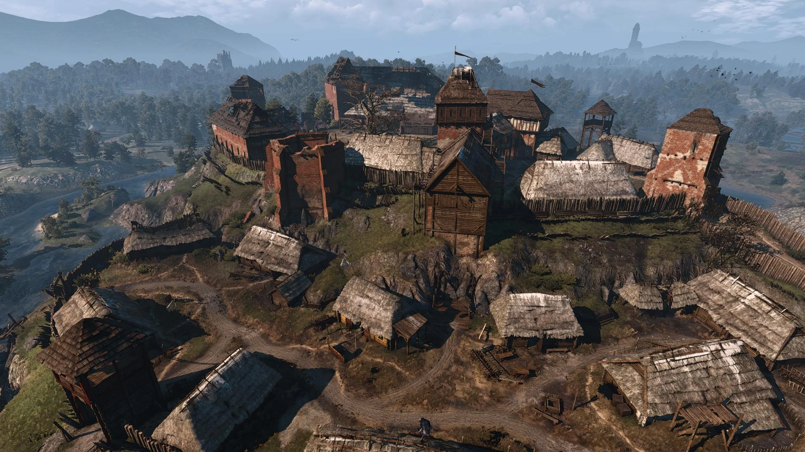
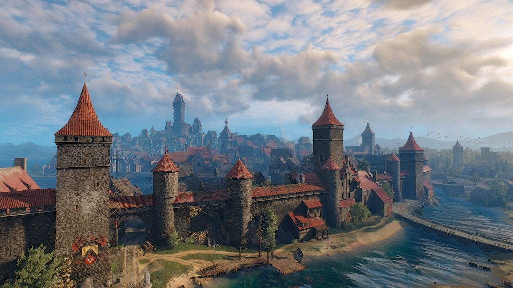
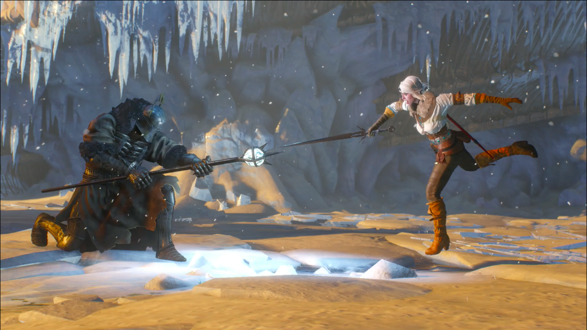

Úvod
Je důležité si uvědomit, že příběh hry není převedením knižní série do počítačové podoby a ani nebyl napsán panem Sapkowskim. Ten ale vše posvětil a dle jeho slov se mu hra velmi zamlouvá. Příběh tedy napsali známí polští spisovatelé Jacek Komuda a Maciej Jurewicz. Podle slov tvůrců pro pochopení hry nemusíte znát díla Sapkowského, avšak jeho čtenáři najdou ve hře mnoho známých postav, předmětů a míst. Celý příběh se odehrává několik let po konci knižní ságy a navíc bude tvořit uzavřený celek, který nebudu natahován na více herních dílů. V podstatě jde tedy o pokračování knižní série.
Bělosad
Bělosad je první oblast, kterou hráč navštíví po úvodní sekvenci ve Kaer Morhen. Je to menší vesnice v severovýchodní části Temerie. Příběh v této oblasti slouží jako úvod do hry a základní mechaniky. Geralt se setká s vesničany a pomáhá jim s místními problémy, například s přízrakem, který terorizuje vesnici. Hledání stopy po Yennefer z Vengerbergu, Geraltově staré lásce a čarodějce, která může mít informace o Ciri.
Velen
Kvůli informacím o lokaci Ciri, musí Geralt pomoct baronovi najít jeho ženu a dceru. Zaklínač také potřebuje prověřit informaci o nové čarodějce ve Velenu. Z neznámé čarodějce se vyklube Keira Metz, která pomůže zaklínači prohledat skrýš jistého elfa co pomáhá Ciri, během toho se Geral a Keira dostanou do potyčky s Divokým honem
Novigrad
Geralt chce požádat o pomoc Triss, ale když jí najde a zjistí že nic neví, tak začne scháňka po Marigoldovi. Ten se ale nechal zatknout tak ho musí Geralt a spol vysvobodit. Během této části hry Geralt získá mnoho důležitých informací o Ciri a jejích dobrodružstvích v Novigradu. Každý úkol přináší nové stopy a odhaluje více o Ciriině pobytu ve městě. Hráč musí často čelit složitým rozhodnutím a morálním dilematům, které ovlivňují příběh a vztahy s ostatními postavami.
Skellige
když zaklínač přijede na Skellige tak od Yennefer zjistí že v nedalekém lese se stala nějaká anomálie, Yennefer si myslí že to byla právě Ciri. Bohužel místní druidi jí nechtěl nechat prohlédnout to místo. Crach an crait také žádá Geralta o pomoc s politickou situací na ostrovech.

Boj o Kaer Morhen
sGeralt po prohledání všech lokací a získání všech informací, najde elfa který Ciri ukryl na ostrově kde jí divoký hon nemůže najít. Zaklínač tedy zajde za jeho přátely a známými aby mu pomohly ubránit Ciri před divokým honem když jí přiveze na Kaer Morhen.

Závěr
V poslední bitvě se Zaklínač, Nilfgárdské jednotky a čarodějky utkají s divokým honem. Po chvilce boje mág z divokého honu zmrází většinu bojovníků včetně Geralta, do té doby než mu Ciri rozbije hůl. Poté se Geralt setkává v duelu s Eredinem. Po tomto momentu jsou možné tři konce, které jsou rozhodnuty podle hráčova chování vůči Ciri.
